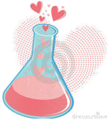
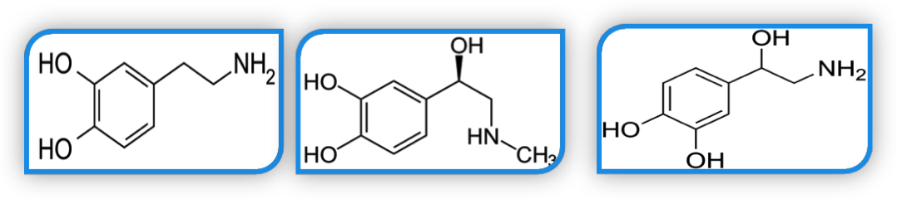

Efeito apresentação de texto Professor com varinha
INÍCIO DO EFEITO: A aula 01 Química no nosso dia a dia tem como objetivos identificar as diversas reações químicas que ocorrem no corpo humano; conhecer a importância e efeito da química no ar que respiramos; compreender a importância da química nos diversos setores da sociedade; na agricultura; vestuário e por fim a sua contribuição para desenvolvimento econômico e tecnológico.
Então vamos viajar no mundo da Química?
Bom Estudo !
Efeito Livro Dinâmico INÍCIO DO EFEITO:
Os produtos químicos fazem parte do nosso cotidiano trazendo conforto e praticidade ao nosso dia a dia. Produtos como xampus, detergentes, vinagre utilizado na salada, os iogurtes e vários outros passaram por transformações químicas que tornaram a vida da humanidade mais fácil.
Fim do Efeito Livro Dinâmico
Efeito Livro Dinâmico INÍCIO DO EFEITO:
Os produtos químicos fazem parte do nosso cotidiano trazendo conforto e praticidade ao nosso dia a dia. Produtos como xampus, detergentes, vinagre utilizado na salada, os iogurtes e vários outros passaram por transformações químicas que tornaram a vida da humanidade mais fácil.
Fim do Efeito Livro Dinâmico
Quando uma folha de árvore é exposta à luz do sol e é iniciado o processo da fotossíntese, o que está ocorrendo é química. Quando o nosso cérebro processa milhões de informações para comandar nossos movimentos, emoções ou ações, o que está ocorrendo é química. A química está presente em todos os seres vivos. O corpo humano, por exemplo, é uma grande usina química. Reações químicas ocorrem a cada segundo para que o ser humano possa continuar vivo. Quando não há mais química, não há mais vida!
Tópico 01: O Corpo Humano e as Reações Químicas
Efeito PAPIRO
INÍCIO DO EFEITO:
A química pode ser definida como a ciência que estuda a natureza da matéria, suas propriedades e transformações. Ela está presente em nosso dia a dia, em todos os materiais que nos cerca, bem como, em todos os seres vivos. O nosso corpo, por exemplo, é formado por diversas substâncias em constante transformação que possibilita o ser humano continuar vivo. Sem essas reações não haveria vida. Ao consumirmos alimentos, água, entre outros, o nosso sistema digestivo produz substâncias químicas capazes de transformar esses materiais ingeridos em nutrientes necessários para diversas funções do organismo, como produção de energia, manutenção dos órgãos, tecidos, ossos, etc. Em todas as ações comandadas pelo nosso cérebro, como por exemplo, nossas emoções, o que ocorre é química.
FINAL DO EFEITO

Você sabia que dos 91 elementos químicos existentes, 21 deles fazem parte do nosso corpo? Isso mesmo, somos constituídos por 95% de massa corpórea, cuja constituição básica são quatro elementos químicos: oxigênio (O2), carbono (C), hidrogênio (H) e nitrogênio (N). Então você se pergunta e os outros 17 elementos químicos? Eles se encontram em nosso corpo em quantidades minoritárias, mas nem por isso se tornam menos importantes ao funcionamento do nosso corpo.
O ferro (Fe2+) que em nosso corpo encontra-se na quantidade de 0,005%, sendo essencial ao bom funcionamento do nosso sangue e já o cálcio (Ca2+), que tem função importantíssima na constituição dos ossos e dentes e encontra-se na proporção de 1,38% no corpo.
A ausência do ferro (Fe2+) e cálcio (Ca2+) ou deficiência provoca doenças como e , devido a má alimentação ou deficiência hormonal.
Um outro tipo de química que ocorre no corpo humano é a química do amor, ah o amor! Embora possamos pensar que ele surge por um encontro de almas, pela flechada do cupido ou mesmo por sorte, a verdade é que desde a euforia da paixão até chegar ao amor complacente, se dá por reações químicas.

O amor nada mais é que o resultado de uma complexa cadeia de reações químicas do cérebro, que liberam continuamente alguns neurotransmissores como a dopamina, adrenalina, norepinefrina, e isto com um único objetivo de perpetuar a espécie. Entre essas substâncias podemos citar: a adrenalina, a noradrenalina, a feniletilamina, a dopamina, a oxiticina, a serotonina e as endorfinas, todas produzidos por áreas ligadas ao sistema de recompensa e prazer do cérebro.
Cada uma destas substâncias causa no nosso organismo uma sensação diferente que nos proporciona bem estar e felicidade. Um exemplo é a dopamina, um importante neurotransmissor do cérebro que promove a sensação de prazer e motivação, gerando a sensação de felicidades.
Figura 2: Fórmula estrutura de neurotransmissores da química do Amor .

A ausência do ferro (Fe2+) e cálcio (Ca2+) ou deficiência provoca doenças como e , devido a má alimentação ou deficiência hormonal.
Responsável: Professora Nidia Barone
Universidade Federal do Ceará - Instituto UFC Virtual